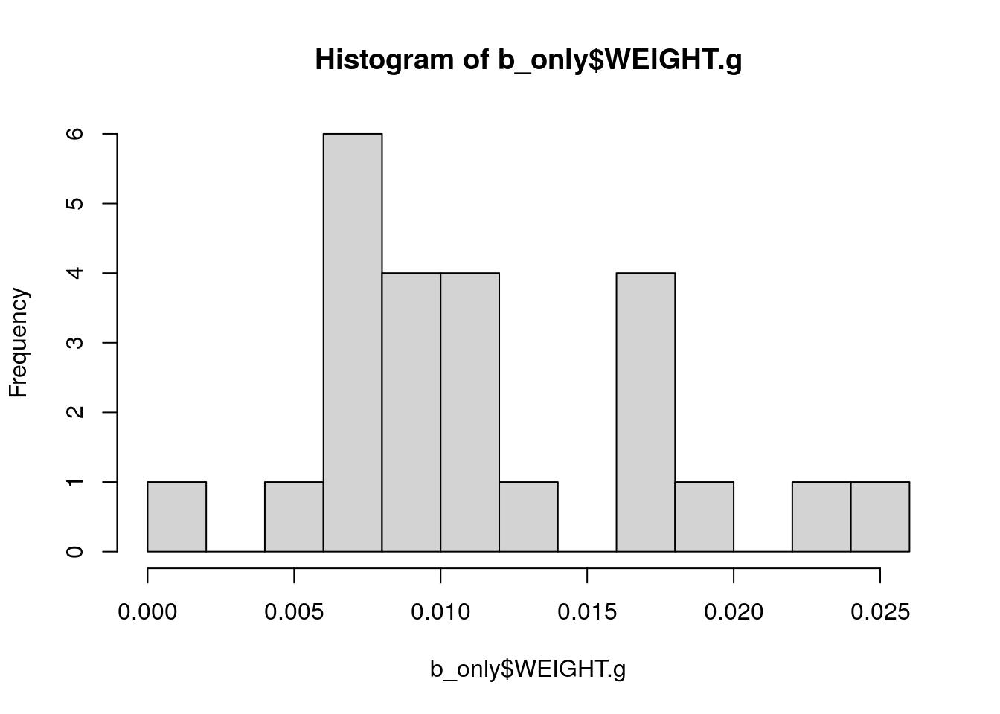
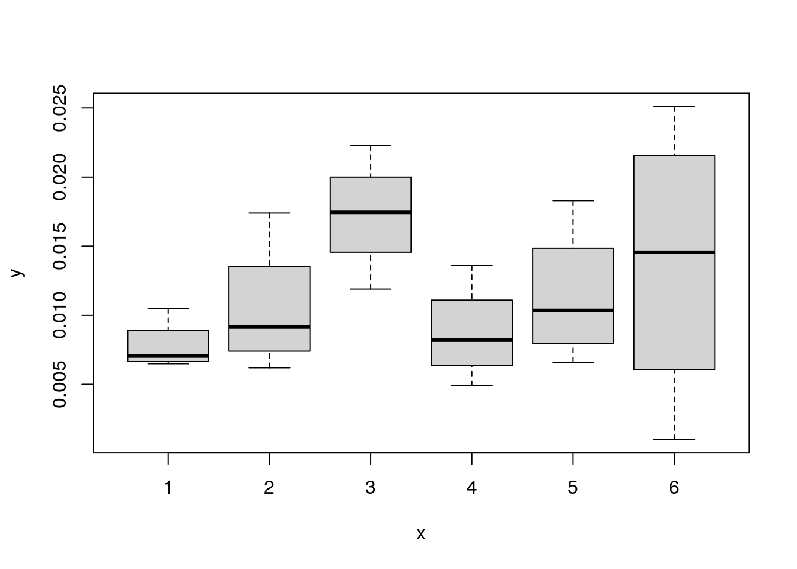
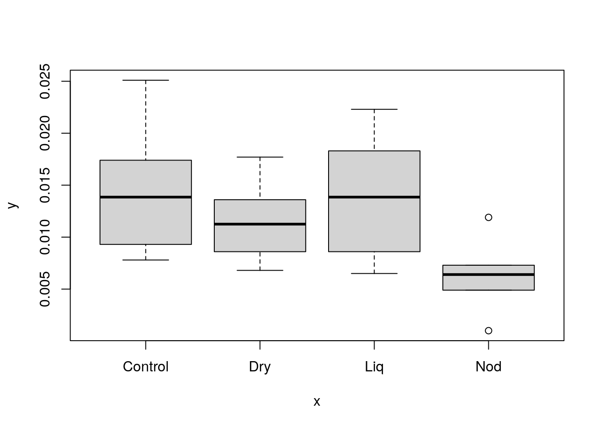

flowchart TB
data_file[("Data file")]
read_data[Read data\ninto R]
wrangle_data["Clean/format\ndata"]
cleaned_data>"Analysis-ready\ndata"]
subgraph "Prepare data"
data_file --- read_data --- wrangle_data --> cleaned_data
end
viz_data["Visualize data"]
visualizations>"Plots &\ntables"]
stat_ansys["Statistical analysis"]
ansys_res>"Analysis results"]
subgraph "Analyze data"
cleaned_data --- viz_data --> visualizations
cleaned_data --- stat_ansys --> ansys_res
end
Basic Analysis
Introduction
This page introduces a brief, basic analysis of grass weights using R.
The workflow for a basic analysis consists of two main steps:
- Preparing the data — Raw data is read into R and processed into data that is in a format that we can analyze.
- Analyzing the data — Data is visualized to create plots and tables, and a formal statistical analysis is performed.
We can visualize the steps of this workflow with a graph:
Prepare data
This section contains the first of the main steps laid out above: preparing the data for analysis.
The goal of this section is to take a raw data file and process it in R so that we have data available in our R session that we can directly use as input for our exploratory and formal data analysis.
Read data into R
- Read data
- The process of loading data from a file, database, or other location meant for long term storage into a short-lived form that we work with in a program.
I have made the raw data file in available online on a code and data hosting platform called GitHub at the following URL: https://github.com/utia-gc/20240805-usda-sep-fellows-r-workshop/raw/main/data/grasses.csv. By looking at the file name (grasses.csv) and checking the data ourselves, we can see that this file is in comma separated value (CSV) format.
Warning
Using a file available on the internet is convenient for a task like this workshop. R can directly read certain types of files from the internet, so we don’t have to worry about downloading files, finding where they downloaded on everyone’s computer, and reading them in from the correct location.
However, managing downloads and finding data on your computer is an important part of performing analysis on your own, and it can be tricky for beginners. I recommend that you develop a system for keeping track of all of your data files associated with each project. Personally, I prefer having different folders on my computer for each project, and inside of each project folder I have a data/ folder where I keep all of my data files. But that is just my preference, and you may prefer a different setup. What’s important is finding a way that works for you!
# read b_only data as csv from URL
combined <- read.csv("https://github.com/utia-gc/20240805-usda-sep-fellows-r-workshop/raw/main/data/grasses.csv")
b_only <- combined[combined$PERSON == "Boussad", ]Clean/format data
- Clean data
- The act of transforming data from its current format into the structure needed for the intended analysis. This can also include data processing steps such as dropping or filling in missing values, computing new values from the data, etc.
Our data is actually already in the format needed for our downstream analyses, so our cleaning steps here are rather light. Mainly, they just help us get categorical variables set up in the order we want for plotting and statistical testing.
R encodes categorical variables in what it calls factors. These factors are inherently ordered – oftentimes this order doesn’t matter, but it controls what our “reference level” is in some statistical tests. This won’t change the results themselves, but we have to be careful about interpreting the results correctly in terms of the reference level.
Encoding factors
When we don’t care about the reference level of a factor, we can make the data a factor with the as.factor() function and let R take care of setting the levels for us.
However, when we do care about the reference level, we should set the levels ourselves with the factor() function and make sure to use the levels argument.
# recode categorical variables as factors one column at a time
b_only$PERSON <- as.factor(b_only$PERSON)
b_only$GRASS <- as.factor(b_only$GRASS)
b_only$BLOCK <- as.factor(b_only$BLOCK)
b_only$TREATMENT <- factor(b_only$TREATMENT, levels = c("Control", "Dry", "Liq", "Nod"))This is a good place to talk generally about data cleaning and how to check the data to make sure it’s in the structure that we need.
To start, we have to know what format we have, and what format we need. There is no “one size fits all” data structure that we need; different analyses require input data to be structured in different ways. A key part of working with data in R is knowing how to process data from the structure that you have into the structure that you need. This means you must work through tutorials and read the documentation for the analysis tools you work with.
However, one general structure that is very common for analyzing data in R is the data.frame. This is the format of the data that we have read in, and it’s what many functions take as input data.
Visualizing data in a
data.frame
The most direct way to figure out how your data is structured is to simply look at it. When you’re interactively performing an analysis in RStudio, I recommend two simple ways of looking at your data by running the following in the Console pane:
# show the contents of the data.frame directly in the Console
b_only
# open an interactive view of the data.frame as a table
View(b_only)Analyze data
Now it’s time for the fun part: analyzing the data!
This is where we turn all of the hard work of experimental design and setup, data collection, and data processing into (hopefully) insights that we can use to test hypotheses, generate further hypotheses, and contribute to the body of knowledge about a subject!
Visualize data
The data should be visualized before any formal analysis is carried out. Here are just a few examples of the benefits of exploratory analysis:
- Identify issues with data
- Identify and explore relationships between variables
- Generate hypotheses
- Check assumptions of formal hypothesis tests
Summary table
R makes it very easy to generate a summary of our data:
# generate a summary of the data
summary(b_only) Date PERSON GRASS TREATMENT BLOCK WEIGHT.g
Min. :45504 Boussad:24 Teff:24 Control:6 1:4 Min. :0.001000
1st Qu.:45504 Dry :6 2:4 1st Qu.:0.007175
Median :45504 Liq :6 3:4 Median :0.010100
Mean :45504 Nod :6 4:4 Mean :0.011575
3rd Qu.:45504 5:4 3rd Qu.:0.017250
Max. :45504 6:4 Max. :0.025100 Note that the ‘Mean’ and ‘Max’ weights are well above the ‘3rd Quartile’. This indicates that the data is probably not normally distributed. We will have to check this further in our exploratory analysis.
Contingency tables
Contingency tables help us explore the number of samples that are associated with categorical variables. This helps us think about sample sizes and allows us to “sanity check” our data.
Contingency tables may be simple and consider only a single variable:
# simple single variable contingency tables
xtabs(~ PERSON, data = b_only)PERSON
Boussad
24 xtabs(~ GRASS, data = b_only)GRASS
Teff
24 Or they may consider multiple variables and allow us to check that our samples are distributed as we expect:
# simple single variable contingency tables
xtabs(~ PERSON + GRASS, data = b_only) GRASS
PERSON Teff
Boussad 24xtabs(~ BLOCK + GRASS + TREATMENT, data = b_only), , TREATMENT = Control
GRASS
BLOCK Teff
1 1
2 1
3 1
4 1
5 1
6 1
, , TREATMENT = Dry
GRASS
BLOCK Teff
1 1
2 1
3 1
4 1
5 1
6 1
, , TREATMENT = Liq
GRASS
BLOCK Teff
1 1
2 1
3 1
4 1
5 1
6 1
, , TREATMENT = Nod
GRASS
BLOCK Teff
1 1
2 1
3 1
4 1
5 1
6 1For example, we see above that all of the Teff grass was collected by Boussad while all the Crabgrass was collected by Zahia.
Additionally, we can verify that we have 1 sample from each type of grass, for each treatment, from each block.
These sanity checks may seem pointless or dry, but it’s imperative that we verify that we didn’t introduce any errors at any of the steps above.
Plotting a quantitative variable
A histogram allows us to visualize the distribution of a quantitative variable.
hist(b_only$WEIGHT.g, breaks = 12)
As noted above, it appears that our weight data is not normally distributed.
plot(b_only$BLOCK, b_only$WEIGHT.g)
plot(b_only$TREATMENT, b_only$WEIGHT.g)
Statistical analysis
Run a one-tailed ANOVA
fit <- aov(WEIGHT.g ~ BLOCK + TREATMENT, data = b_only)
summary(fit) Df Sum Sq Mean Sq F value Pr(>F)
BLOCK 5 0.0002450 4.899e-05 2.339 0.0928 .
TREATMENT 3 0.0002515 8.382e-05 4.001 0.0281 *
Residuals 15 0.0003142 2.095e-05
---
Signif. codes: 0 '***' 0.001 '**' 0.01 '*' 0.05 '.' 0.1 ' ' 1